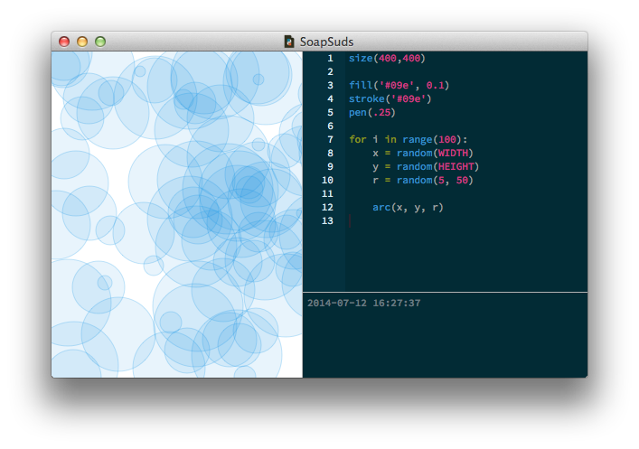

Repetition is what computers are really good at; they never grow bored, you can ask them to do the same thing over and over again and they will never stop liking it. And they’re fast at calculating too.
This is the main advantage of using code as a design tool; you don’t have to do everything by yourself again and again. Once you get the first time right, just let the computer handle the hundred other times.
for loopIn programming, iteration (doing the same thing multiple times) is generally
called a loop. Python provides a concise syntax for looping over a
set of values through its "for … in …:" statement. The first ellipsis should
be replaced with a variable name – the loop's "counter". The second ellipsis should be a list
or other sequence type (to be stepped through item-by-item).
The statement should look like this:
for variable in list:
... # do something
Don’t forget the colon at the end of the for statement! The colon and the indentation of the next line(s) are what let Python determine the beginning and end of the loop.
The variable can have any name you like (as you already know if you've read about variables). This variable holds the "current" count as you step through the indented code again and again. A common name for it is i, a residue of basic math where counters are generally named i as well.
It’s short, and it’s a good convention with a long history.
The list part is a collection of numbers or elements. Each element in the sequence is consecutively assigned to the variable. A for-loop can step through anything you like: numbers, strings, colors, and so on.
So if list were [, the commands in the for-loop would be
executed three times, with variable consecutively being "apple", "pear", "banana"]"apple" the first time,
"pear" the second time, and "banana" the third time:
for i in ["apple", "pear", "banana"]: print i >>> apple >>> pear >>> banana
If you want your loop to execute a fixed number of times, try using the built-in range() function. When you use a range, the loop will run once for each value from zero up to (but not including) the number you pass as the range argument.
for i in range(3):
print i
>>> 0
>>> 1
>>> 2
The do stuff part consists of one or more PlotDevice commands that need to be executed repeatedly. They are indented beneath the for-statement. The script is ‘trapped’ in a loop here and keeps executing the indented commands until each element from list has consecutively been assigned to variable.
What makes this powerful is being able to use the variable's value in each loop. Like in the
example above, where we had a little loop that went through all the fruit in the list and
printed out each piece of fruit. Calling print i is an abstract command: when PlotDevice
goes through the loop i is replaced with each element in the list, thus you get different output each time the line executes (even though it's the same code statement every time).
For-loops and the random() command work really well together. You can draw a hundred circles for example, and have PlotDevice place each of them at random locations. This way, each time you run the script, you get a different composition of circles.
It’s easy to program a ‘style’ with variations this way.
for i in range(100):
x = random(HEIGHT)
y = random(WIDTH)
r = random(25, 50)
arc(x, y, r)
